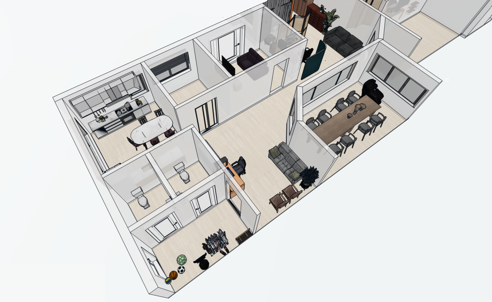

Individanpassat stöd och relationsbaserat arbete med fokus på deltagarnas mående, trygghet och en meningsfull vardag.

Örngruppen präglas av glädje, sammanhållning och kreativitet. Gruppen har en nyfiken och lösningsfokuserad grundton där deltagare och personal tillsammans skapar en meningsfull vardag.
Tempot varierar beroende på dagsform och behov. Ibland är miljön lugn och stabil, medan den vid andra tillfällen kan bli mer intensiv. Arbetet sker ofta individuellt eftersom många deltagare behöver specifikt stöd och vägledning, samtidigt som gemenskap och relationer är centrala delar av vardagen.